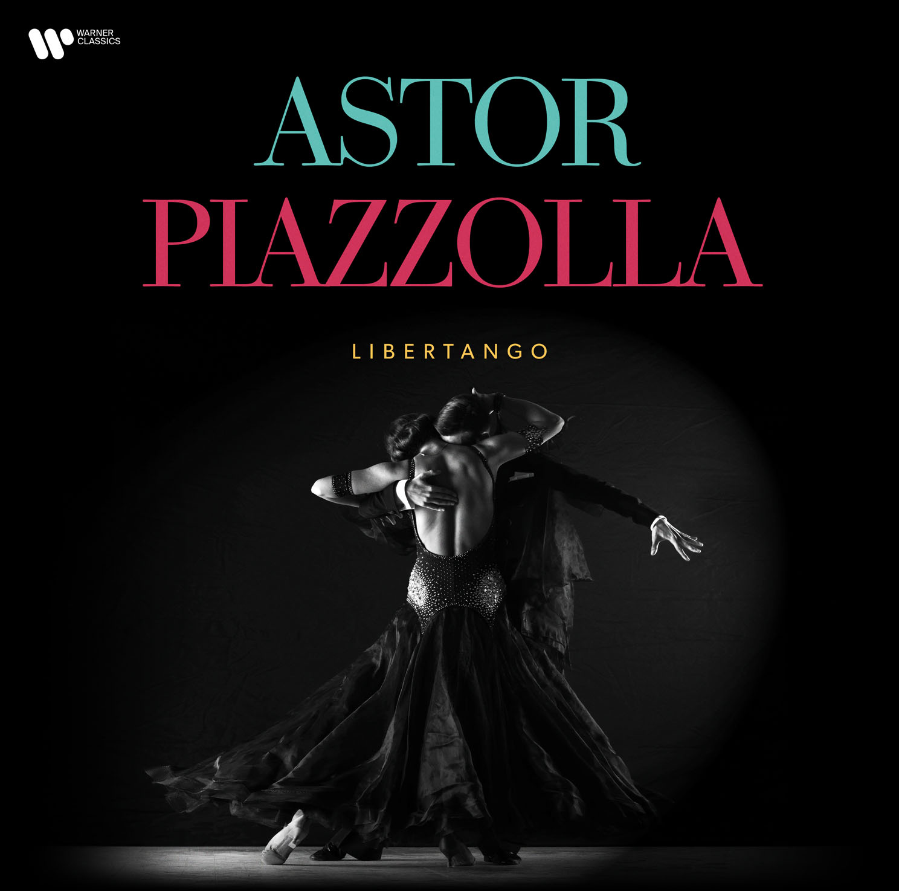

Libertango je jednou z nejznámějších Piazzollových skladeb, která byla vydána v roce 1974. Název vyjadřuje Piazzollovu uměleckou svobodu. Skladba je rytmicky energická a výrazně moderní. Kombinuje tradiční tango s prvky jazzového rytmu a dramatické melodiky. Díky tomu se stala tak populární po celém světě.
Libertango bylo mnohokrát přearanžováno pro různé nástroje i zpěváky. Objevilo se v mnoha filmech a televizních pořadech. Jeho jednoduchý, ale výrazný motiv si získal širokou popularitu. Tato skladba symbolizuje Piazzollův umělecký posun od tradičního tanga k moderním formám. Stala se jedním z pilířů jeho odkazu. Video ukázka:
